Lá Lành — 58 frame để review
Bản local sau vòng sửa 07/10/2026. Ảnh chụp từ app thật, dữ liệu QA; chưa deploy. Màn chính và các trạng thái sheet/form/sáng–tối được liệt kê bên dưới. Bấm ảnh để xem kích thước gốc.
Phạm vi và các nhánh chưa kiểm tra · Mở Home local · Mở Hợp gu local
So sánh Home: nguồn bên trái, runtime bên phải
Cùng viewport 390×844. Ngày/copy khác: runtime dài hơn nên card tăng chiều cao, không cắt chữ. Đây không phải ảnh cùng dữ liệu để đo pixel-perfect.
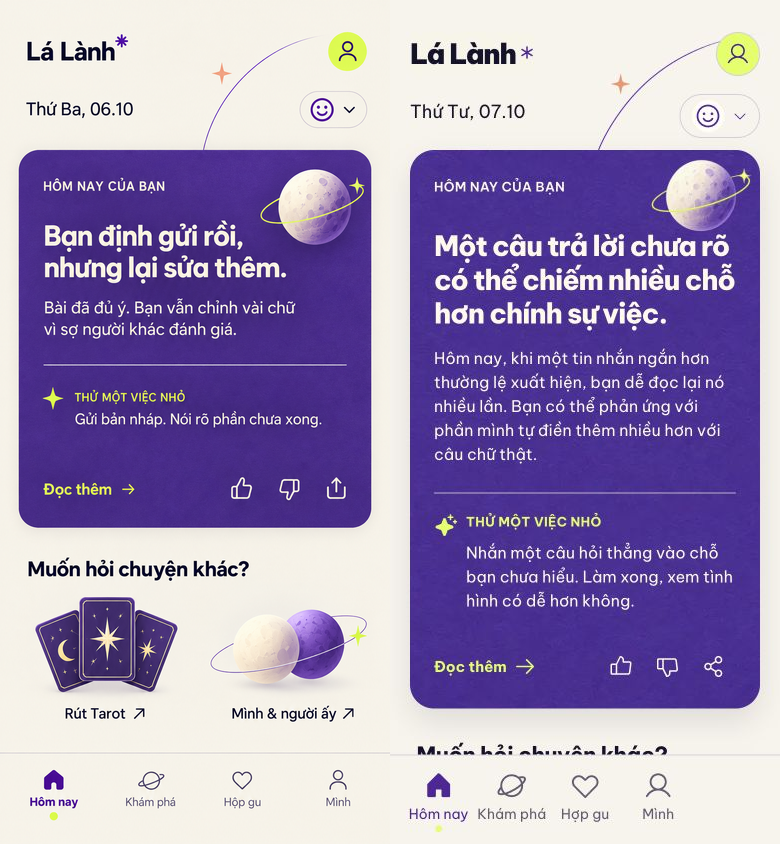
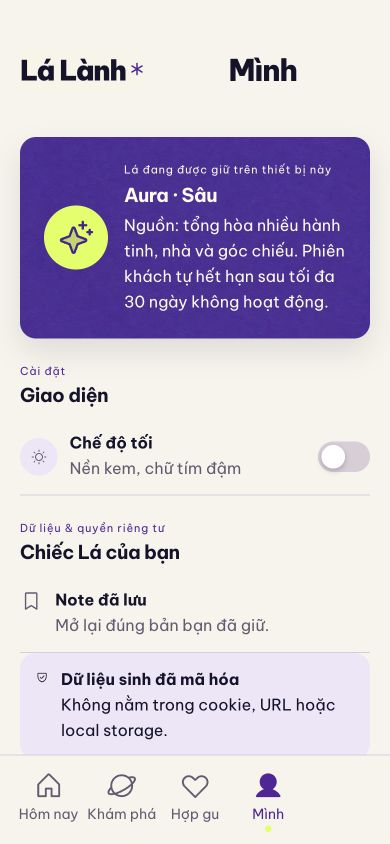
05 profile
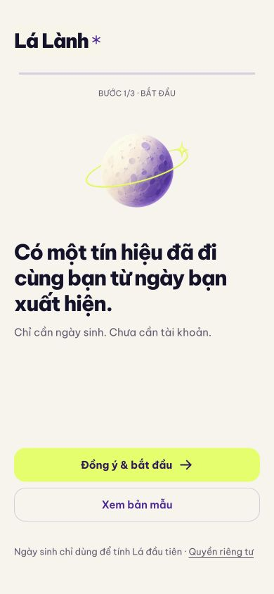
06 welcome
07 birth
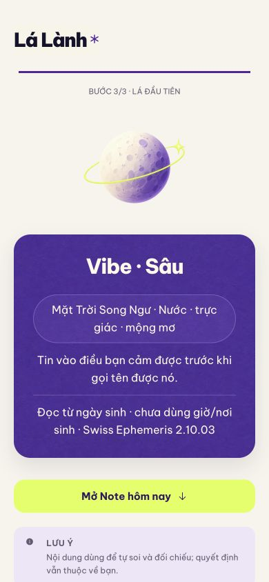
08 reveal
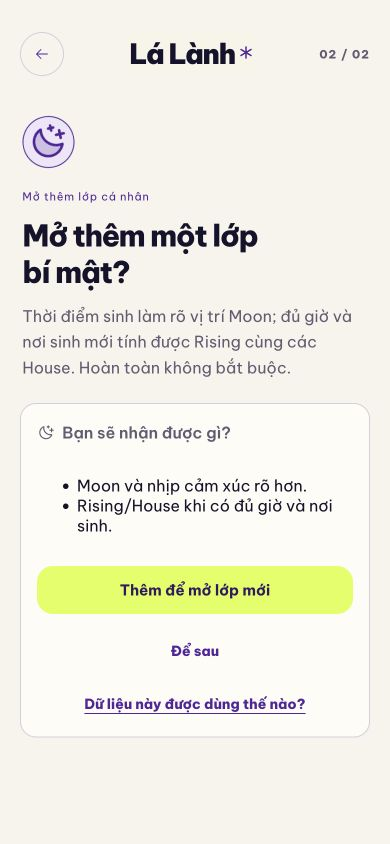
09 birth supplement
10 privacy
11 demo
12 note detail
13 moon reading
14 synthesis
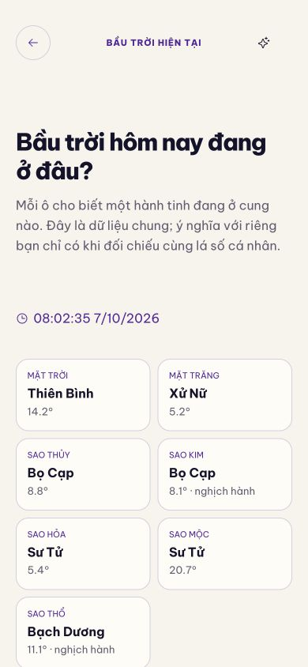
15 sky
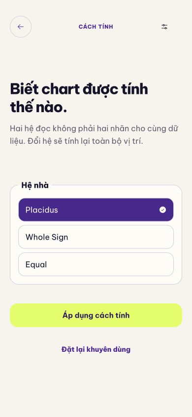
16 chart settings
17 note card
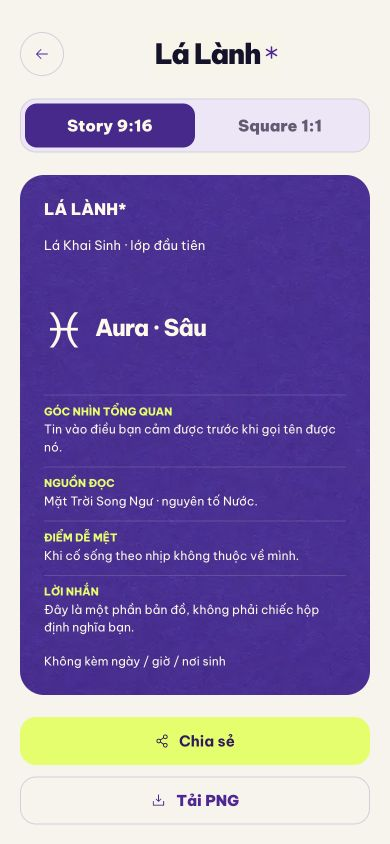
18 birth card
19 saved
20 existing user
21 radar private start
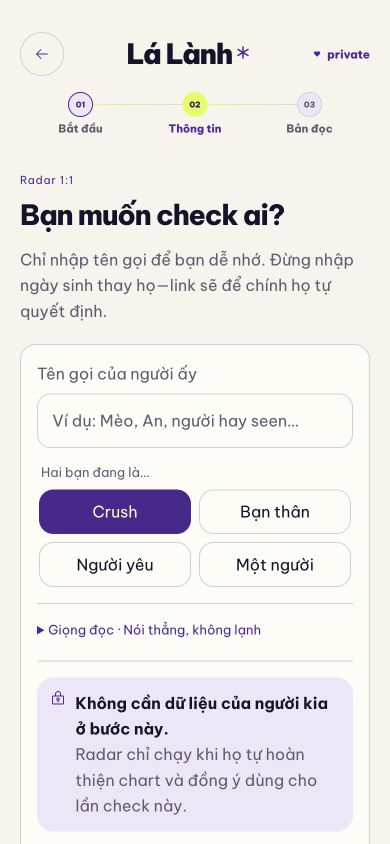
22 radar invite
23 radar report
24 radar continue empty
25 radar receipt empty
26 radar public invalid
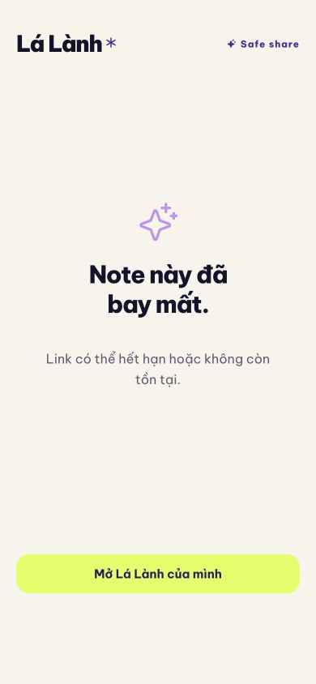
27 share invalid
28 retired social
29 invite history
30 response management
31 aura reveal
32 route not found
33 birth time exact
34 birth time approx
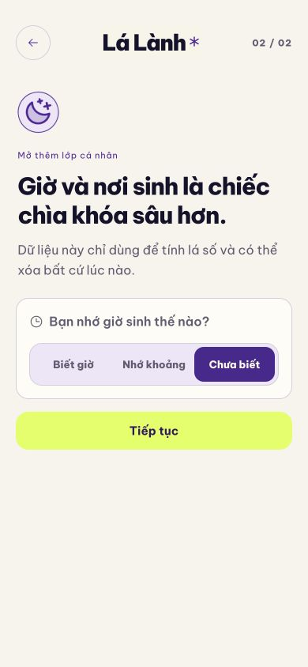
35 birth time unknown
36 birth place catalogue
37 birth review consent
38 tarot draw three
41 tarot five start
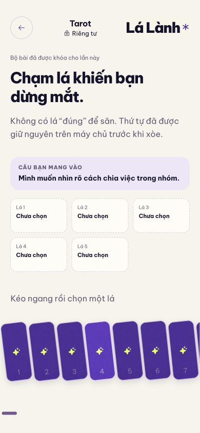
42 tarot five draw
43 tarot five result
44 home mood sheet
45 home context sheet
46 profile dark
47 home dark
48 jyotish reading
49 radar report chapters
 50 radar invite created
50 radar invite created
 51 radar invite history
51 radar invite history
 52 radar public own link
52 radar public own link
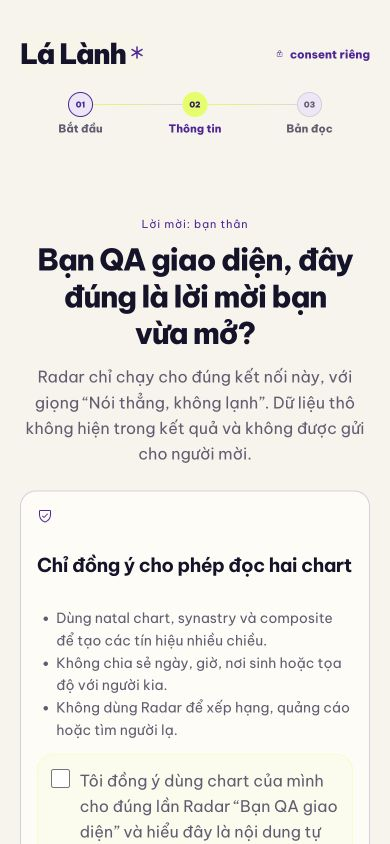
53 radar consent
54 radar report bottom
55 home 320
56 radar 320
57 tarot 320
58 birth 320
59 home explore
60 tarot result final